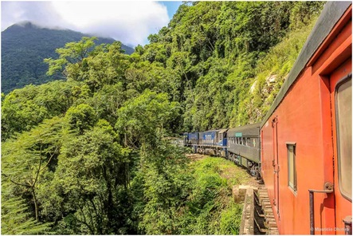
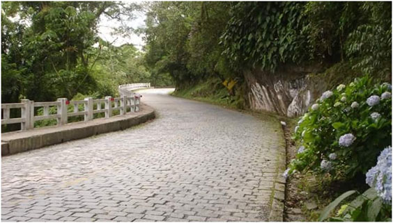
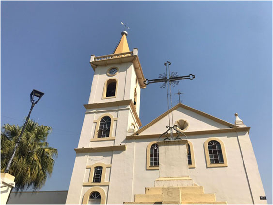
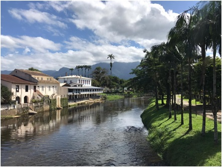

HISTÓRIA DE MORRETES Até o século XVI, a região atual do município era território dos índios carijós. A partir de 1646, com a descoberta de jazidas de ouro, a região passou a ser ocupada por mineradores e aventureiros provenientes de São Paulo. Em 1721, foi fundado oficialmente o povoado de Morretes.Foi o ouvidor Rafael Pires Pardinho quem, em 1721, determinou que a Câmara Municipal de Paranaguá medisse e demarcasse 300 braças em quadra para servir de localização da sede da futura povoação de Morretes. Em 31 de outubro de 1733 foi realizada a medição das terras no ponto onde residia o rendeiro do porto João de Almeida, primeiro morador a localizar-se nas terras delimitadas, onde foram construídas duas casas, uma das quais pertencia a João de Almeida, localizada no morro da Igreja, e a outra denominada Casa da Farinha. O povoamento da localidade foi lento e, em meados do século XVIII, transferiu-se para Morretes o parnanguara Capitão Antônio Rodrigues de Carvalho e sua esposa Dona Maria Gomes Setúbal, que receberam autorização do Papa para levantar uma Capela. Sendo esta erigida em 1769 e foi denominada Nossa Senhora do Porto e Menino Deus dos Três Morretes. A partir desta época, o lugar teve grande crescimento com o setor comercial tornando-se ponto de referência obrigatória aos viajantes de serra acima e rio abaixo. Em 1812, começou a construção da atual Igreja Matriz de Nossa Senhora do Porto, no mesmo local da primitiva Capela. Na primeira metade do século XIX, foi construída no Porto de Cima, pelos escravos, a Igreja de São Sebastião. Devoção de origem portuguesa sob a invocação de Nossa Senhora da Guia e de São Sebastião. O nome do município originou-se do fato de estar a Cidade cercada por morros de pequena elevação e que eram denominados de Morretes. Morretes teve um papel relevante no desenvolvimento econômico e politico do Estado, notadamente no Ciclo do Ouro de 1665 a 1735, quando havia muitas minas, destacando-se entre elas a mina de Penajóia e no ciclo da erva-mate, 1820 a 1880, quando o comércio e o beneficiamento da erva-mate sobrepujou as demais atividades. Os engenhos de socar erva eram quase todos movidos por força hidráulica. Ela chegava aqui pelo caminho da Graciosa e depois conduzida ao planalto pelo caminho do arraial. Foi neste ciclo, que em 1848, foi construído o 1º Theatro do Paraná, no Largo da Parada. Com a chegada dos trilhos de aço da Estrada de Ferro, cujo tráfego iniciou-se em 1885, Morretes decaiu vertiginosamente. Seu comércio foi altamente prejudicado, parando os engenhos de erva-mate e afetando toda a estrutura sócio-econômico-cultural do município. A partir de então, operou-se uma reação reconquistando, aos poucos, sua importância no contexto do estado do Paraná. |
ESTRADA DE FERRO MORRETES X CURITIBA Este roteiro reúne um dos 10 passeios de trem mais espetaculares do mundo, e duas das principais cidades históricas do sul do país, tudo com os cuidados de um guia e a bordo dos carros (vagões) da composição. |
 |
| ESTRADA DA GRACIOSA A estrada da Graciosa é um trecho sinuoso que liga Curitiba a Antonina e passa por uma área da Serra do Mar bem preservada de Mata Atlântica. O trecho é muito bonito, com vários mirantes e áreas com quiosques para lanche e descanso. Se tiver tempo, vale a pena parar nos mirantes para apreciar a vista, comer um pastel e comprar uns doces de banana para levar pra casa. |
 |
| IGREJA MATRIZ DE NOSSA SENHORA DO PORTO A Igreja Matriz de Morretes possui uma história bastante peculiar e interessante. No início, a cidade possuía apenas uma capela e a população carecia de uma igreja que marcasse a presença da fé católica. Quase 100 anos depois da sua fundação, a igreja atual teve sua construção iniciada em 1812, em um dos pontos mais elevados da cidade, e finalmente inaugurada em 1850. Foi batizada como Igreja Nossa Senhora do Porto, pois durante uma procissão em 1849, a imagem de Nossa Senhora do Porto, Padroeira da Vila de Morretes, caiu do andor, fazendo-se em pedaços. No mesmo ano, foi encomendada uma imagem vinda da Bahia, esculpida em madeira, com revestimento de gesso. |
 |
| CENTRO HISTÓRICO Fundada em 1733, Morretes mantém viva e bem preservadas os casarões coloniais e ruas típicas portuguesas. Caminhar sem direção é a certeza de encontrar relíquias do nosso passado. Comece seu tour principalmente ao redor do rio Nhundiaquara. Alguns dos casarões podem ser visitados, outros se transformaram em restaurantes, museus, lojas e espaços culturais. |
 |
MATERIAL PUBLICADO NO SITE DA PREFEITURA MUNICIPAL DE MORRETES |
AUTO DE MEDIÇÃO E POSSE DA CIDADE DE MORRETES - PR (Obs.: Foi mantida a ortografia empregada por Antonio Vieira dos Santos e textos conforme constam na edição de 1950 abaixo citada.) Certefico que, a pedido do Capitão Modesto Gonçalves Cordeiro da Vílla de Morretes, revi o Archivo desta Cámara, e em hum Livro que serve de Tombo da mesma a f. 156 - verso em diante consta, o Auto da medição e posse do theor seguinte. SANTOS, Antonio Vieira dos. Memória Histórica Chronológica Topographica, e Descriptiva da Villa de Morretes e do Porto Real Vulgarmente Porto de Cima. Secção de História do Museu Paranaense. Curitiba, Dezembro de 1950. |